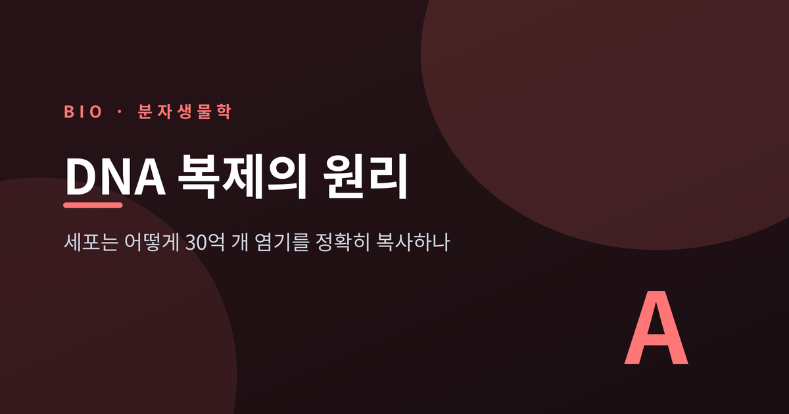
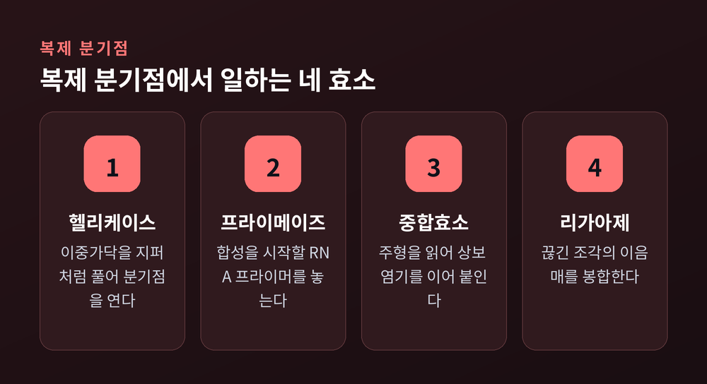
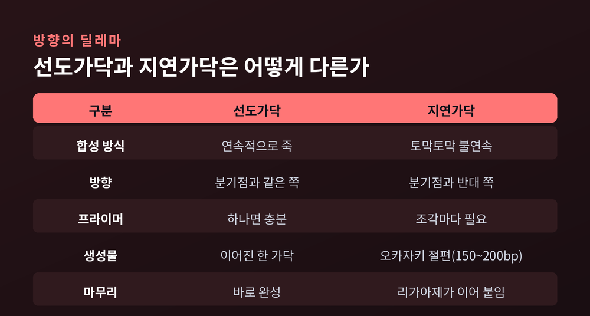
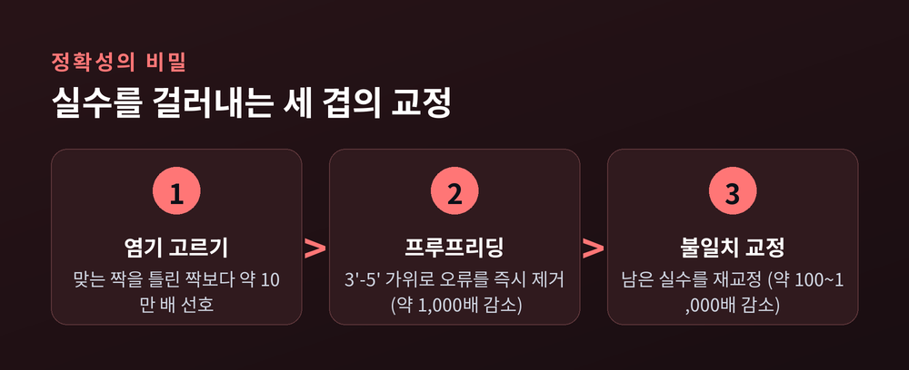

이번 글에서는 DNA 복제의 원리를 정리해 보겠습니다. 우리 몸의 세포 하나가 둘로 나뉠 때마다, 약 30억 개의 염기쌍이 통째로 복사됩니다. 그 방대한 작업이 어떻게, 그리고 얼마나 정확하게 이루어지는지 차근차근 따라가 보려 합니다.
먼저 결론부터 말씀드리면 이렇습니다. DNA 복제는 옛 가닥 하나를 본으로 삼아 새 가닥을 짜 넣는 반보존적 방식이며, 여러 효소가 분업하고, 세 겹의 교정 장치를 거쳐 최종 오류율이 10억~100억 개당 하나 수준까지 내려갑니다. 아래에서 하나씩 풀어 보겠습니다.
DNA는 두 가닥이 마주 꼬인 이중나선입니다. 복제가 시작되면 이 두 가닥이 갈라지고, 각 가닥이 새 짝을 만드는 주형이 됩니다.
여기서 핵심은 완성된 이중나선의 구성입니다. 새로 만들어진 나선은 옛 가닥 하나와 새 가닥 하나로 이루어집니다. 원래의 두 가닥이 각각 절반씩 새 분자 속에 남는 셈입니다. 그래서 이 방식을 반보존적 복제라고 부릅니다.
이 사실은 1958년 메셀슨과 스탈의 실험으로 확인되었습니다. 두 사람은 대장균을 무거운 질소(15N) 배지에서 키운 뒤, 표준 질소(14N) 배지로 옮겼습니다. 그리고 밀도에 따라 DNA를 분리하는 원심분리를 걸었습니다.
결과는 명쾌했습니다. 한 번 복제한 DNA가 전부 중간 밀도로 나타난 것입니다. 무거운 옛 가닥 하나와 가벼운 새 가닥 하나가 한 분자 안에 섞여 있다는 뜻이었습니다. 원본을 통째로 남기는 방식이었다면 이런 중간층은 나올 수 없었을 것입니다. 흔히 "생물학에서 가장 아름다운 실험"이라 불리는 이유입니다.
복제는 한 단백질의 솜씨가 아닙니다. 여러 효소가 복제 분기점이라는 Y자 현장에서 동시에 손발을 맞춥니다.
시작은 헬리케이스입니다. 이중가닥을 지퍼 열듯 풀어 두 가닥으로 벌립니다. 그러면 프라이메이즈가 짧은 RNA 프라이머를 놓습니다. 이 프라이머는 합성을 시작할 발판입니다.
주역은 DNA 중합효소입니다. 주형을 한 글자씩 읽으며 상보적인 염기를 붙여 나갑니다. A에는 T, G에는 C를 맞춥니다. 마지막으로 리가아제가 끊긴 조각들의 이음매를 봉합해 하나의 연속된 가닥으로 잇습니다.
숨은 조연도 있습니다. 슬라이딩 클램프입니다. 중합효소를 DNA에 고리처럼 물려 붙잡아 도중에 떨어지지 않게 합니다. 이 고리가 없으면 대장균 중합효소는 초당 20글자도 못 붙이고 열 글자 남짓에서 이탈합니다. 그러나 클램프에 물리면 속도는 초당 약 1,000글자로, 한 번에 이어 붙이는 길이는 수만 염기로 뛰어오릅니다. 작은 부품 하나가 성능을 수십 배로 끌어올리는 셈입니다.

여기서 까다로운 문제가 하나 생깁니다. DNA 중합효소는 오직 한 방향, 5'에서 3' 쪽으로만 새 가닥을 만들 수 있습니다.
그런데 두 모가닥은 서로 반대 방향으로 놓여 있습니다. 하나의 분기점에서 두 가닥의 사정이 갈릴 수밖에 없습니다.
한쪽 가닥은 운이 좋습니다. 분기점이 열리는 방향과 합성 방향이 같아, 프라이머 하나로 죽 이어서 만들면 됩니다. 이것이 선도가닥입니다.
반대쪽은 사정이 다릅니다. 합성 방향이 분기점과 어긋나, 조금씩 끊어서 거꾸로 되짚어 만들어야 합니다. 이렇게 토막토막 생기는 짧은 조각을 오카자키 절편이라 부릅니다. 진핵세포에서 그 길이는 대략 150~200 염기쌍입니다. 조각마다 새 프라이머가 필요하고, 다 만든 뒤에는 리가아제가 이들을 하나로 꿰맵니다. 이 가닥이 지연가닥입니다.
같은 분기점에서 한쪽은 물 흐르듯, 다른 쪽은 바느질하듯 나아갑니다. 방향이라는 하나의 제약이 이 비대칭을 만든 것입니다.

30억 개를 베끼면서 실수가 없을 수는 없습니다. 놀라운 것은 그 실수를 걸러내는 방식입니다. 정확성은 한 번에 얻어지지 않고, 세 단계를 거쳐 겹겹이 다져집니다.
첫째는 염기 고르기입니다. 고정확도 중합효소는 맞는 짝을 틀린 짝보다 약 10만 배 선호합니다. 처음부터 웬만해선 틀린 글자를 끼우지 않습니다.
둘째는 프루프리딩입니다. 중합효소에는 3'에서 5' 방향으로 작동하는 가위(엑소뉴클레아제)가 달려 있습니다. 잘못 넣은 염기를 그 자리에서 도로 잘라냅니다. 이 되짚기 한 번이 오류를 약 1,000배 더 줄입니다.
셋째는 불일치 교정입니다. 그래도 남은 실수를 뒤따라오는 교정 시스템이 다시 훑어 100배에서 1,000배가량 더 바로잡습니다.
이 세 겹을 다 통과하고 남는 최종 오류율은 염기쌍 10억~100억 개당 하나 수준입니다. 사람이 30억 글자를 옮겨 적으며 겨우 한 글자 안팎만 틀리는 정확도라고 생각하면, 그 정밀함이 실감납니다.

한 지점에서 순서대로만 복사한다면 인간 유전체 하나를 베끼는 데 수십 일이 걸립니다. 세포는 이 문제를 나눠서 풉니다.
복제를 시작하는 지점, 곧 복제 원점이 유전체 곳곳에 흩어져 있습니다. 인간 세포에서는 수천 개의 분기점이 동시에 열려 함께 작업합니다. 초기 추정으로는 세포 하나에 약 5,000개의 복제 분기점이 언급됩니다.
각 분기점은 분당 0.5~0.6마이크로미터 정도의 속도로 나아갑니다. 참고로 대장균은 초당 약 1,000염기를 붙일 만큼 빠릅니다. 방대한 일을 잘게 쪼개 동시에 처리하는 이 병렬 전략이, 세포 분열이라는 짧은 시간 안에 복제를 끝내는 비결입니다.
복제 기계에도 한계가 있습니다. 선형 염색체의 맨 끝은 완전히 복사되지 못합니다. 지연가닥 끝에 놓인 마지막 프라이머 자리가 채워지지 못하기 때문입니다. 이것을 말단 복제 문제라고 부릅니다.
그래서 염색체 끝에는 텔로미어라는 반복 서열이 모자처럼 덧대어져 있습니다. 정작 중요한 유전자 대신 이 여분이 닳도록 설계된 것입니다. 세포가 한 번 분열할 때마다 텔로미어는 약 50~100 염기쌍씩 짧아집니다.
이 여분이 임계 길이까지 줄면 세포는 더 이상 나뉘지 못하고 멈춥니다. 사람 세포가 나눌 수 있는 횟수에 한계가 있다는 이 관찰을 헤이플릭 한계라 합니다. 텔로미어는 일종의 분열 회수권인 셈입니다.
물론 예외도 있습니다. 생식세포와 줄기세포, 그리고 암세포는 텔로머레이스라는 효소로 짧아진 텔로미어를 다시 늘립니다. 이 발견은 2009년 노벨 생리의학상으로 이어졌습니다. 다만 텔로머레이스가 노화를 마음대로 되돌려 준다고 말하기는 아직 이릅니다. 같은 효소가 암세포의 무한 증식에도 쓰이기 때문입니다.
정리하면 이렇습니다. 세포는 옛 가닥을 본으로 삼고, 효소들이 분업하며, 세 겹의 교정으로 실수를 걸러 30억 개의 글자를 거의 완벽하게 옮겨 적습니다.
그 안에는 방향의 제약도, 끝을 못 채우는 한계도 함께 담겨 있습니다. 완벽해서가 아니라, 한계를 안고도 정확을 지켜내는 방식이라는 점이 더 인상 깊습니다.
"생명은 자신을 정확히 베껴 쓰는 데서 이어진다."
내 몸의 세포가 지금 이 순간에도 그 일을 조용히 해내는 중이라고 생각하면, 복제라는 말이 조금은 다르게 들리지 않으신지요.